SOLLEVAMENTO DEI CARICHI BILANCIATI CENTRALMENTE
Il baricentro corrisponderà di norma con il centro del carico. Se il contenuto del contenitore è assicurato in modo che non possa spostarsi al suo interno, il bilanciamento del carico resta invariato.
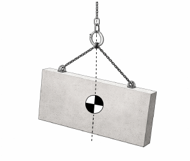
SOLLEVAMENTO DEI CARICHI BILANCIATI FUORI CENTRO
l baricentro di un carico bilanciato fuori centro si trova di norma verso l’estremità più pesante del carico . Se il contenuto del contenitore è assicurato in modo che non possa spostarsi al suo interno, il bilanciamento del carico resta invariato.
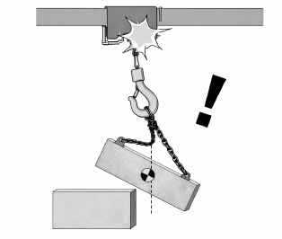
VARIAZIONE DEL BILANCIAMENTO DEL CARICO
Una variazione nel bilanciamento del carico può improvvisamente tirare la fune o la catena di sollevamento.
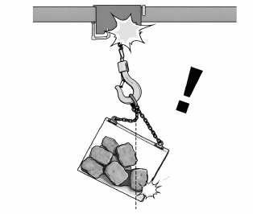
CARICO INSTABILE
Se il carico è instabile, può esercitare una forza improvvisa sulla fune o la catena di sollevamento. Il contenuto delle casse da imballaggio deve essere assicurato in modo da escludere la possibiità di spostamenti durante il sollevamento.
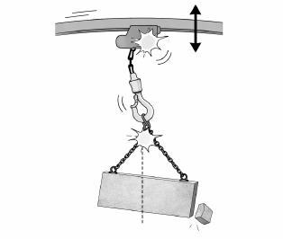
RIDUZIONE RAPIDA DEL CARICO
Un’improvvisa variazione del carico può portare il paranco a vibrare violentemente.
PARANCHI
è ASSOLUTAMENTE VIETATO
Operare e/o sostare sotto al carico sollevato.
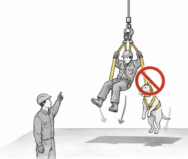
Sollevare persone e/o animali, i quali potrebbero cadere.
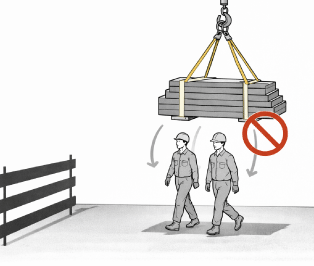
Sollevare carichi mentre le persone transitano in vicinanza della macchina.
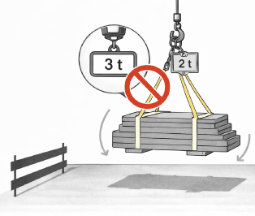
Sollevare carichi di peso superiore alla PORTATA NOMINALE MASSIMA del Paranco indicata sulla targhetta.
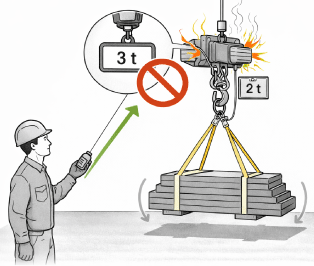
Insistere con il comando di SALITA qualora il carico fosse eccedente quello consentito, causando sovraccorenti e surriscaldamenti.
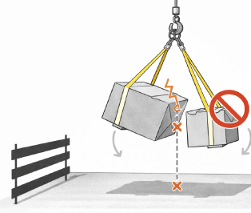
Sollevare carichi non equilibrati e/o che possono cambiare o il loro baricentro;.
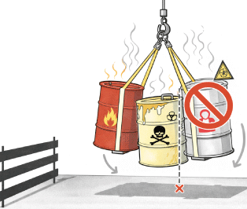
Sollevare materiali pericolosi: infiammabili, tossici, nocivi, corrosivi, irritanti, a temperatura elevata, esplosivi;.
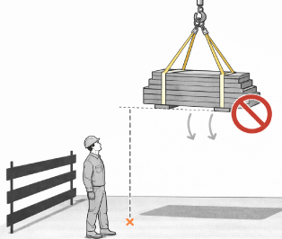
Sollevare il carico ad altezza maggiore di quella strettamente necessaria.
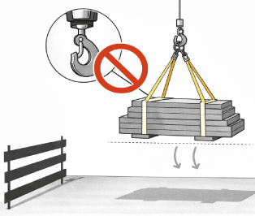
Sollevare il carico senza avere verificato la perfetta chiusura del dispositivo di chiusura di sicurezza del gancio.
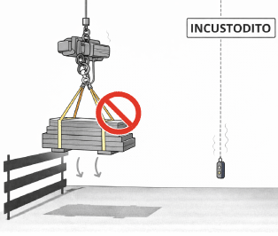
Lasciare il paranco caricato incustodito.
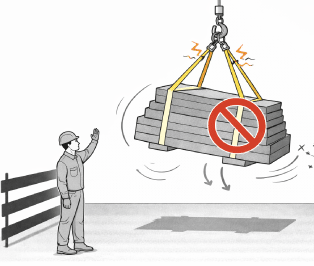
Eseguire manovre brusche.
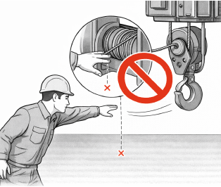
Introdurre oggetti o parti del corpo fra il cavo d’acciaio in fase di avvolgimento ed il tamburo o la carrucola.
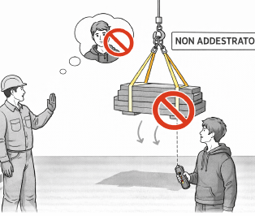
Consentire l’uso del paranco a personale non addestrato.
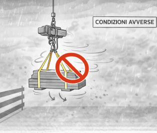
Usare il paranco in condizioni ambientali avverse e/o non previste (forte vento, pioggia, umidità elevata, scarsa visibilità ecc.).
Usare il paranco in ambienti non sufficientemente illuminati.
PARANCHI
Transennare l’area sottostante a quella di tiro ed eseguire un breve ciclo di lavoro per testare il corretto funzionamento dei motori e dei freni.
Per le operazioni di movimentazione in quota, sono previsti 2 operatori al piano (posti in sicurezza per le operazioni in quota) e 1 al suolo.
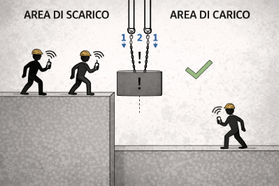
Il Paranco elettrico può essere utilizzato in due configurazioni differenti, e precisamente: a “tiro singolo” e a ”tiro doppio”
Nella configurazione a “tiro singolo” il carico è direttamente sostenuto dal cavo d’acciaio tramite il gancio posto all’estremità libera del cavo stesso; n questa configurazione la portata massima del Paranco è di 200 kg.
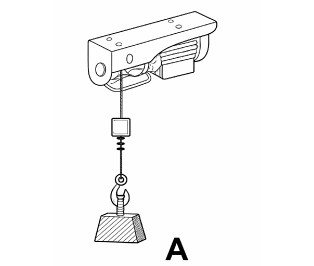
Nella configurazione a “tiro doppio” il gancio posto all’estremità libera del cavo d’acciaio è assicurato al telaio del Paranco, mentre il carico è sostenuto dal gancio con carrucola in dotazione; in questa configurazione la portata massima del Paranco è di 400 kg.